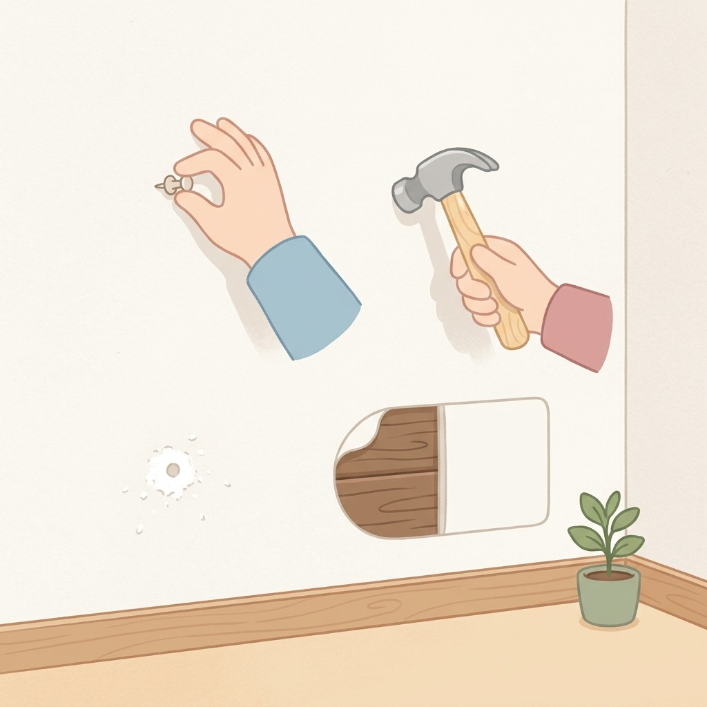
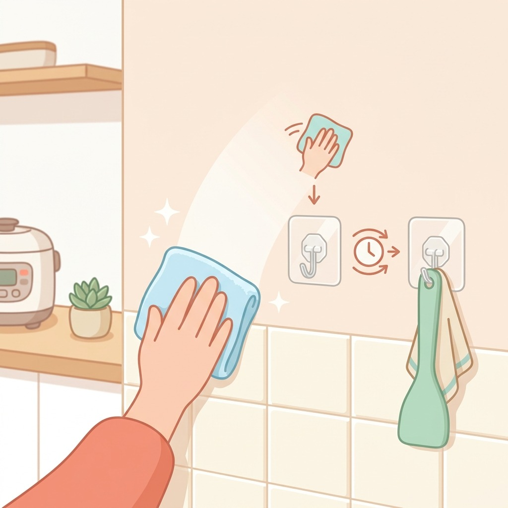
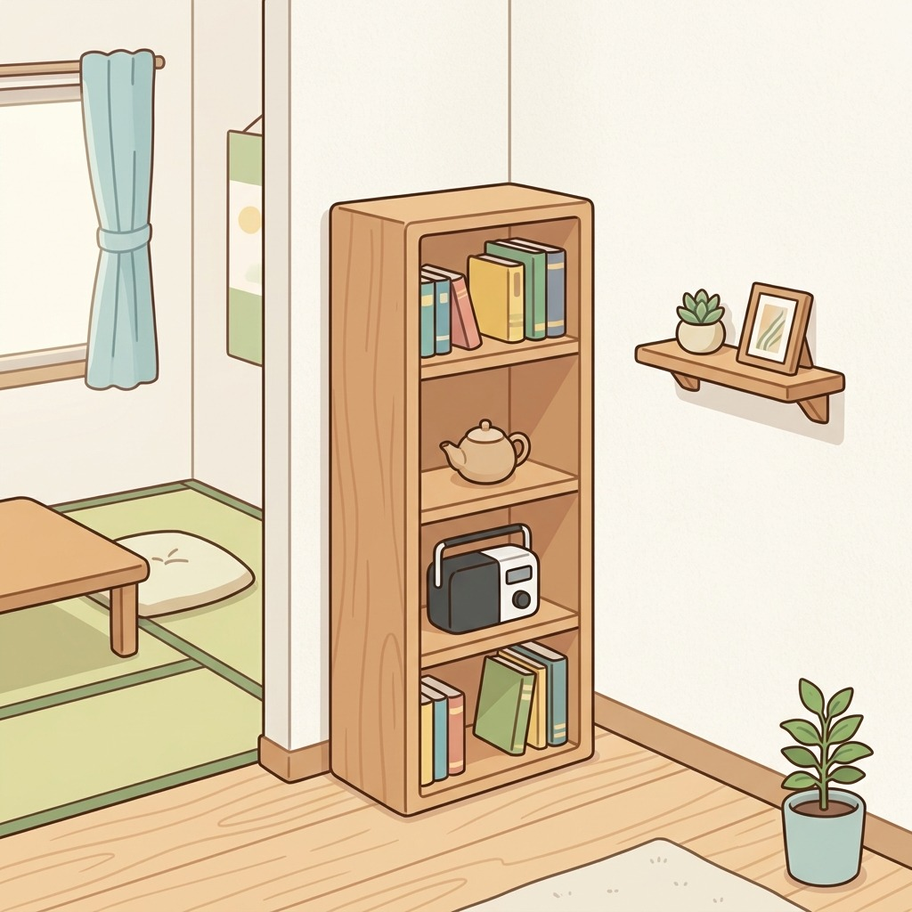
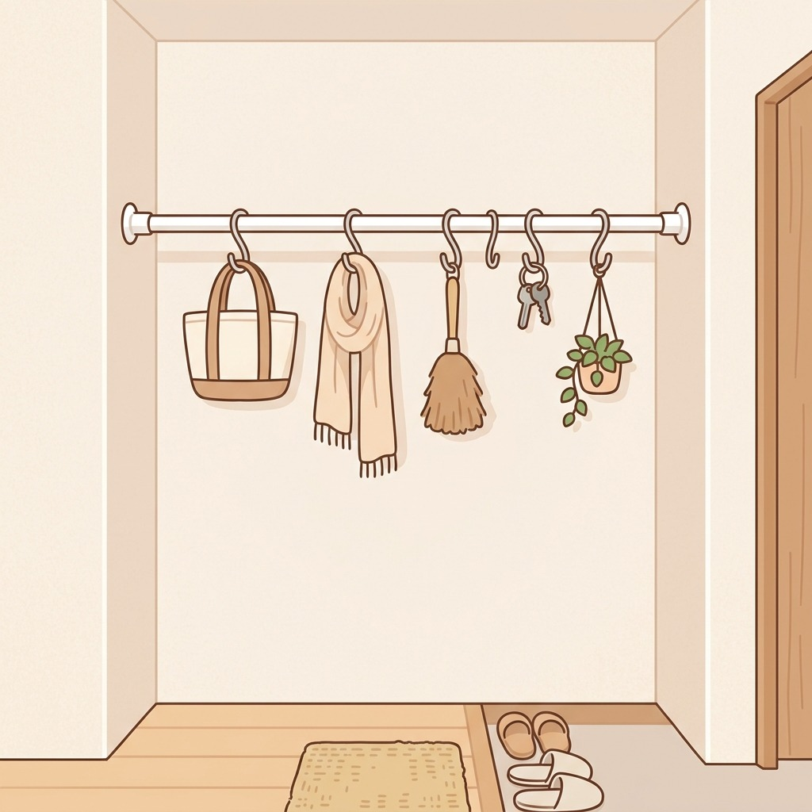
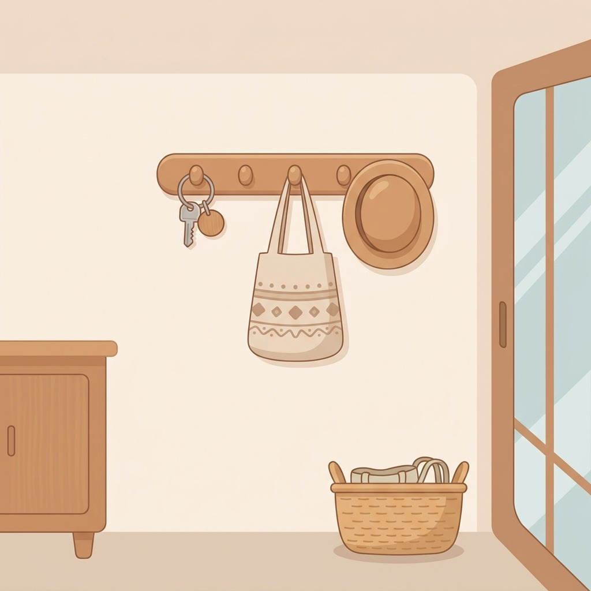

壁を使えば床が広がる
賃貸でも穴をあけない壁面収納
この記事のコツ
- まず壁の素材を確認
- 粘着フックは下地拭きから
- 重い物は床置き棚に
- つっぱり棒で空中に一列
- 掛ける物は「毎日使う物」

1まず壁の素材を確認
石膏ボードか木かで使える道具が変わる。押しピン跡が残るかも先に確認。

2粘着フックは下地拭きから
油分やホコリを乾拭きしてから貼る。数時間置いてから物をかけると安定しやすい。

3重い物は床置き棚に
壁は軽い小物だけ。本や家電は細長い棚を床に置いて、上に伸ばす方が安全。

4つっぱり棒で空中に一列
洗面所や玄関のくぼみにつっぱり棒。S字フックを足せば吊るす収納が作れる。

5掛ける物は「毎日使う物」
鍵・エコバッグ・帽子など出番の多い物だけ。使わない物は壁から下ろす。